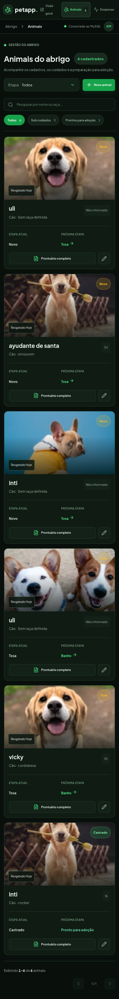

P2 · medioResponsive / UX
BUG-001 · Scroll horizontal a 320 px
Área: navegación y todas las páginasDescripción: En 320×740, body conserva un ancho mínimo de 360 px. El documento se desborda 40 px y obliga a desplazamiento horizontal, ocultando parte del contenido.
Pasos:
- Abrir
/. - Navegar a Animais.
- Emular 320×740.
- Observar que
documentElement.scrollWidthes 360 px para un viewport de 320 px.
Red: GET iniciales 200. Consola: limpia.
